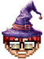

Sport:
Date and time on the tape (optional):
Arrange the rundown, then turn on Set Show to run it. Cards can't be taken until then.
Each block's length, and the break after it, in minutes:seconds (like 2:05). Leave a box empty for none. Blocks without a length aren't timed.
When OBS goes to one of these scenes, the next break starts.
The wait and the delay only hold back breaks started by a break scene, so the cue lines up with your stinger. A delay is used instead of waiting.
In OBS, under Settings > Hotkeys: FX Wizard: Start Break (the next one), Reset Break (the last one started) and Toggle AKTA control.
Break scenes and hotkeys need server.py (the server that runs in OBS).